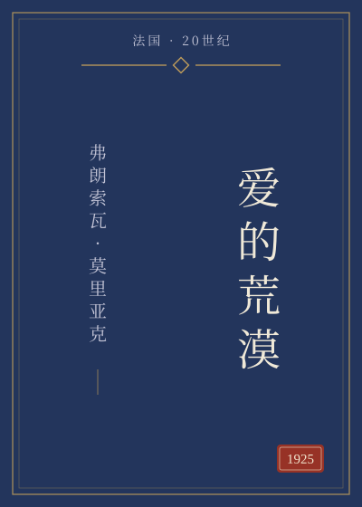
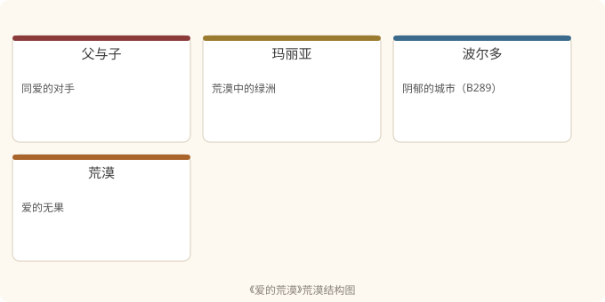

爱的荒漠
一、基本信息
| 作者 | 弗朗索瓦·莫里亚克 |
|---|---|
| 成书/出版 | 1925年（Britannica：Le Désert de l'amour (1925; The Desert of Love)——'Mauriac showed increasing mastery'） Francois Mauriac — Encyclopaedia Britannica（百科全书） |
| 国别/地区 | 法国 |
| 时代 | 现当代 · 20世纪 |
| 体裁 | 长篇小说 |
| 语言 | 法语 |

《爱的荒漠》荒漠结构图（主题·结构图）
二、创作背景
Britannica（B289）：'Mauriac showed increasing mastery in Le Désert de l'amour (1925; The Desert of Love)'（显示日益成熟的掌控——B289）。
题材（通说待核）：父子同恋一个女人的'荒漠'——波尔多医生库雷热一家。
三、内容脉络
父与子同爱玛丽亚——爱如荒漠（通说待核）。
四、主要人物表
| 人物 | 身份 | 说明 |
|---|---|---|
| 库雷热医生 | 父亲 | （通说待核） |
| 库雷热之子 | 青年 | （通说待核） |
| 玛丽亚 | 交际花 | （通说待核） |
五、主题与艺术特点
- '爱的荒漠'：欲望的无果（书名通说待核）。
- 父子的暗战（通说待核）。
- 天主教的悲悯（B289 语境：Catholic novelist）。
六、影响与评论
- Britannica：'Mauriac showed increasing mastery in Le Désert de l'amour (1925)'（B289）。
Francois Mauriac — Encyclopaedia Britannica（百科全书） - Britannica：1952年诺奖（B289 作者级）。
Francois Mauriac — Encyclopaedia Britannica（百科全书）
七、阅读建议
难点
- 天主教叙事。
- 父子的心理镜像。
- 《爱的荒漠》（广西师范大学出版社，通说待核）。
- 法文原版（公有领域渐近）。
先《爱的荒漠》后《苔蕾丝》《蝮蛇结》。
八、待核实
- 1925年出版核对。
- 库雷热父子/玛丽亚人名核对。
- 回忆的倒叙结构待核。
本页主要来源
弗朗索瓦·莫里亚克的其他收录作品：爱的荒漠